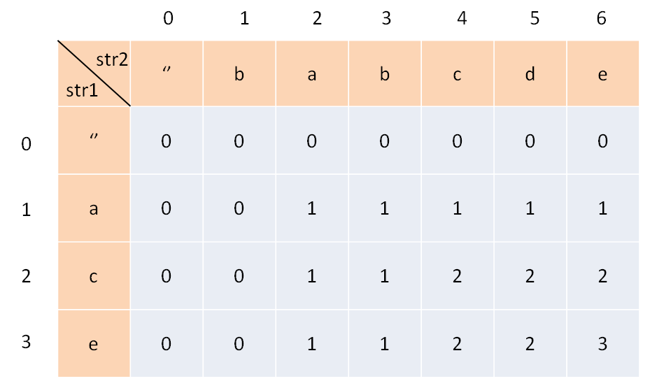
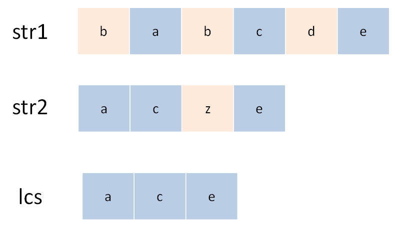
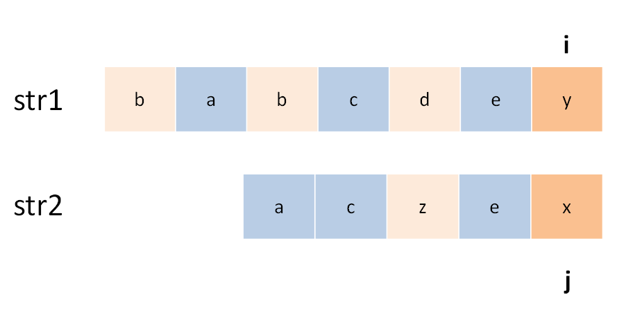
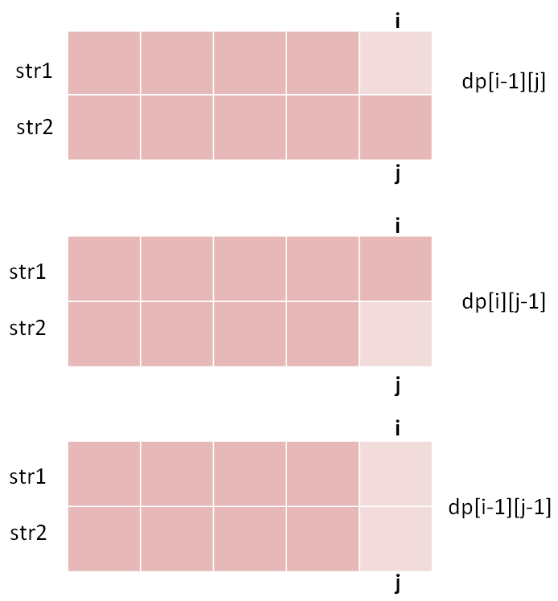
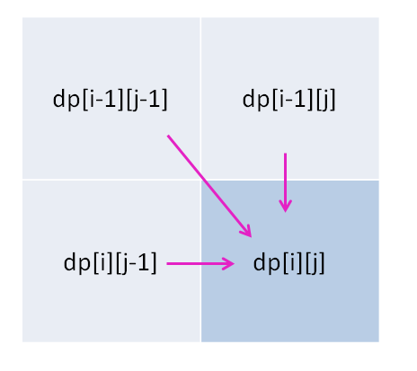

Translator: ABCpril
Longest Common Subsequence (LCS) is a classic interview question, because its solution indicates typical two-dimensional dynamic programming. Most of the difficult problems related to string are similar to LCS problem, such as Edit distance. Moreover, LCS algorithm is worth mastering because it can be utilized to solve other relative problems effectively.
Given str1 and str2, find out the length of the longest common subsequence.
Input: str1 = "abcde", str2 = "ace"
Output: 3
Explanation: The longest common subsequence is "ace" whose length is 3Some readers may wonder why should this problem be solved by dynamic programming. It is difficult to list exhaustively all the possible results when it comes to solving the problem of subsequence types. Thanks to exhausting and pruning, dynamic programming algorithms can be satisfying. In a word, as long as the subsequence is involved, dynamic programming should be considered to solve it.
Let’s analyze how to solve this problem with dynamic programming skills in detail.
The first step is to make sure the meaning of the dp array . For the dynamic
programming problem of two strings, the routine is universal.
For example, for the strings s1 ands2, a DP table should be constructed like this:

For the sake of understanding this table, we temporarily consider that the index starts from 1. We only need to
make a few adjustments in the code block later. Among them, dp [i] [j] means: For
s1 [1..i] and s2 [1..j], their LCS length is dp [i] [j] .
In the table above, d [2] [4] means: For " ac " and " babc ", their LCS length is 2. The
final answer is hidden in dp [3] [6].
The second step is to define the base case.
What base case needs is that: dp[0][..] and dp[..][0] should be initialized to 0 for
representing null strings.
According to the definition of the dp array above, dp [0] [3] = 0 means: For the
strings""and"bab", the length of the LCS is 0. Due to one null string, the length of their
longest common subsequence should obviously be zero.
The third step is to find the state transition equation。
This is the most difficult step in dynamic programming. Fortunately, the routines for this type of string problem are similar. So let’s take this question as an example to find out ideas for handling such problems.
Making choices is what state transition exactly does. For example, this problem is to find the longest common
subsequence of s1 ands2. This subsequence may be called lcs. So what options
are there for each character in s1 ands2? Obviously, there are two options, either in
lcs or not.

Both “in” and “absent” are choices. The key is, which should you choose? This requires some brainpower: if a
character should be in lcs, then this character must exist in boths1 and s2,
becauselcs is the longest common subsequence. So consider this:
Use two pointers i andj to traverse s1 ands2 from back to
front. If s1 [i] == s2 [j], then this character must be in lcs;
Otherwise, at least one of s1[i] and s2[j] is not in lcs . And it should
be discarded. Have a look at the recursive solution which is easier to understand:
def longestCommonSubsequence(str1, str2) ->
int:
def dp(i, j):
# base case
if i == -1 or j ==
-1:
return 0
if str1[i] == str2[j]:
# found a character belongs to lcs, keep finding
return dp(i - 1, j - 1)
+ 1
else:
# it's up to the character which can make lcs longer
return max(dp(i-1, j), dp(i,
j-1))
# i and j became the indexes of the final character in lcs
return dp(len(str1)-1,
len(str2)-1)
For the first case, you have found a character in lcs,i jshould move forward
by one, and the length oflcs increases by one; for the latter, take greater results from left and up.
In fact, this code is a brute force solution. We can optimize the time complexity through memos or DP tables, such as the DP table described above:
def longestCommonSubsequence(str1, str2) ->
int:
m, n = len(str1), len(str2)
# construct DP table and base case
dp = [[0] * (n + 1)
for _ in range(m + 1)]
# state transition
for i in range(1, m
+ 1):
for j in range(1, n
+ 1):
if str1[i - 1] == str2[j -
1]:
# found a character in lcs
dp[i][j] = 1 +
dp[i-1][j-1]
else:
dp[i][j] = max(dp[i-1][j],
dp[i][j-1])
return dp[-1][-1]
For the cases where s1 [i] and s2 [j] are not equal, it indicates that at least
one of the characters are not in lcs. Will both characters be missing? For example:

So let’s change the code to this considering the situation above:
In fact, you can change it this way and get the correct answer, but it is useless because
dp [i-1] [j-1] is always the smallest of the three, and max will not reach it.
The reason lies in our definition of dp array: for s1 [1..i] and s2 [1..j], their LCS
length is dp [i] [j].

Through this way, it is clear that the length of the lcs corresponding
todp [i-1] [j-1]cannot be larger than the first two cases, so there is no need to add it in the
comparison.
For the dynamic programming of two strings, DP tables are generally defined. Because it is easier to write the
state transition equation and get the state of dp [i] [j] by analyzing the previous dp values with DP
table:

The key to find out the state transition equation is to think about the “choices” of each state. As long as we can make the right choice with right logic, the algorithm will take effect as planned.